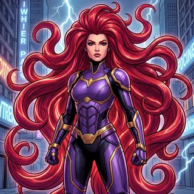

📡 Küldetés-eligazítás

📡 Medúza: Az irányítótű elkészült. Most már nem az a kérdés, hogyan számolunk, hanem hogy melyik eszközt vesszük elő. Szög? Merőlegesség? Terület? Erő? Crni Grom szerint minden kérdésnek megvan a maga szorzata — és aki rosszat választ, az hibátlan számolással is rossz eredményt kap.
Ez a témakör záró egysége: rendszerezzük, mire melyik szorzat való, egy háromszögről három pontból mindent kiszámolunk, és egy rövid kitekintésben megnézzük, hogyan számol a fizika erőkkel és munkával.
Melyik szorzat mire jó
📘 Melyik eszköz melyik kérdésre
| A kérdés | Az eszköz | A képlet |
|---|---|---|
| két pont távolsága, egy oldal hossza | intenzitás | ha \(\overrightarrow{AB}=(x;y;z)\): \(|\overrightarrow{AB}|=\sqrt{x^2+y^2+z^2}\) |
| két vektor szöge | skaláris szorzat | \(\cos\varphi=\dfrac{\vec a\cdot\vec b}{|\vec a|\,|\vec b|}\) |
| merőleges-e | skaláris szorzat | \(\vec a\cdot\vec b=0\) |
| a \(\vec b\) skaláris vetülete az \(\vec a\) irányára, munka | skaláris szorzat | \(\dfrac{\vec a\cdot\vec b}{|\vec a|}\), \(W=\vec F\cdot\vec s\) |
| paralelogramma, háromszög területe | vektoriális szorzat | \(|\vec a\times\vec b|\), \(\tfrac12|\vec a\times\vec b|\) |
| párhuzamos-e | vektoriális szorzat (vagy arányos koordináták) | \(\vec a\times\vec b=\vec 0\) |
| mindkét vektorra merőleges irány | vektoriális szorzat | \(\vec a\times\vec b\) |
A táblázat egy mondatban: a skaláris szorzat a szöghöz, a vektoriális a területhez tartozik. A skaláris vetület képlete a definícióból jön: \(|\vec b|\cos\varphi=\dfrac{\vec a\cdot\vec b}{|\vec a|}\).
🎯 Gyors kérdés
Melyik párosítás hibás?
Geometriai alkalmazások
✏️ Kristály-kamra szimuláció — egy háromszögről mindent
A Kamra egyik kristálylapja az \(A(2;1;0)\), \(B(4;3;1)\), \(C(1;3;2)\) csúcsú háromszög. Számítsd ki
- az oldalai hosszát,
- az \(A\) csúcsnál lévő \(\alpha\) szögét (fokban, egy tizedesre),
- a területét!
Megoldás
a) \(\overrightarrow{AB}=(2;2;1)\), \(\overrightarrow{AC}=(-1;2;2)\), \(\overrightarrow{BC}=(-3;0;1)\). Hosszuk: \(AB=\sqrt{4+4+1}=3\), \(AC=\sqrt{1+4+4}=3\), \(BC=\sqrt{9+0+1}=\sqrt{10}\approx3{,}16\). (A háromszög egyenlő szárú.)
b) Az \(A\)-nál lévő szöghöz az \(A\)-ból induló két vektor kell: \(\overrightarrow{AB}\cdot\overrightarrow{AC}=-2+4+2=4\), így \(\cos\alpha=\dfrac{4}{3\cdot3}=\dfrac49\approx0{,}4444\), és számológéppel \(\alpha\approx63{,}6^\circ\).
c)
\[\overrightarrow{AB}\times\overrightarrow{AC}=\vec i\begin{vmatrix}2&1\\ 2&2\end{vmatrix}-\vec j\begin{vmatrix}2&1\\ -1&2\end{vmatrix}+\vec k\begin{vmatrix}2&2\\ -1&2\end{vmatrix}=(2;-5;6),\]intenzitása \(\sqrt{4+25+36}=\sqrt{65}\), tehát \(T=\dfrac{\sqrt{65}}{2}\approx4{,}03\).
Ellenőrzés: \(T=\tfrac12\cdot AB\cdot AC\cdot\sin\alpha=\tfrac12\cdot3\cdot3\cdot\sin63{,}6^\circ\approx4{,}03\) ✔.
a) \(AB=AC=3\), \(BC=\sqrt{10}\approx3{,}16\) · b) \(\alpha\approx63{,}6^\circ\) · c) \(T=\dfrac{\sqrt{65}}{2}\approx4{,}03\)
Négyszögek. Ha az \(ABC\) háromszöget a \(D=B+C-A=(3;5;3)\) csúcs egészíti ki \(ABDC\) paralelogrammává, akkor a fenti számokból rögtön látszik a fajtája is: a két szomszédos oldal egyenlő (\(AB=AC=3\)), tehát rombusz; a skaláris szorzatuk viszont \(4\ne0\), tehát nem négyzet. Általában egy paralelogramma pontosan akkor téglalap, ha két szomszédos oldalvektorának skaláris szorzata \(0\); pontosan akkor rombusz, ha két szomszédos oldala egyenlő hosszú; és négyzet, ha mindkettő teljesül.
⚠️ Maxi trükkje
„Az \(A\) csúcsnál lévő szöghöz az \(\overrightarrow{AB}\) és a \(\overrightarrow{CA}\) vektort vettem: \(\overrightarrow{AB}\cdot\overrightarrow{CA}=-4\), \(\cos\alpha=-\tfrac49\), \(\alpha\approx116{,}4^\circ\).”
A \(\overrightarrow{CA}\) befelé mutat az \(A\) csúcsba, nem onnan kifelé — így Maxi a mellékszöget kapta: \(180^\circ-63{,}6^\circ=116{,}4^\circ\). Egy háromszög csúcsánál lévő szöghöz mindkét vektor abból a csúcsból induljon: az \(A\)-nál \(\overrightarrow{AB}\) és \(\overrightarrow{AC}\), a \(B\)-nél \(\overrightarrow{BA}\) és \(\overrightarrow{BC}\).
Árulkodó jel: ha az \(A\)-nál tompaszög volna, a vele szemközti \(BC\) oldalra \(BC^2>AB^2+AC^2=18\) teljesülne (a koszinusztétel szerint \(116{,}4^\circ\) mellett \(BC^2=26\) lenne). A valóságban \(BC^2=10<18\), tehát az \(A\)-nál hegyesszög van.
🎯 Gyors kérdés
Az \(ABC\) háromszög \(B\) csúcsánál lévő szögét számolod. Melyik vektorpár skaláris szorzatából indulj ki?
Fizikai alkalmazások
A fizikában az erő, az elmozdulás és a sebesség vektor — a velük végzett számolás pontosan az, amit ebben a témakörben tanultál. Két alapeset:
- Több erő együttes hatása az eredő erő: a vektorok összege; nagysága (erőnél így mondjuk az intenzitást) az összeg intenzitása.
- Az állandó \(\vec F\) erő munkája az \(\vec s\) elmozdulás során a skaláris szorzat: \(W=\vec F\cdot\vec s=|\vec F|\,|\vec s|\cos\varphi\). Például egy \(40\) N-os, az elmozdulással \(60^\circ\)-os szöget bezáró erő munkája \(5\) m-es elmozdulás során \(40\cdot5\cdot\tfrac12=100\) J.
✏️ Kristály-kamra szimuláció — eredő erő és munka
Egy kristályra két erő hat: \(\vec F_1=(2;3;1)\) N és \(\vec F_2=(1;-1;1)\) N. a) Mekkora az eredő erő, és mekkora a nagysága? b) Miközben a két erő hat rá, a kristály elmozdulása \(\vec s=(4;1;0)\) m. Mennyi munkát végez az eredő erő?
Megoldás
a) \(\vec F=\vec F_1+\vec F_2=(3;2;2)\) N, nagysága \(|\vec F|=\sqrt{9+4+4}=\sqrt{17}\approx4{,}12\) N.
b) \(W=\vec F\cdot\vec s=3\cdot4+2\cdot1+2\cdot0=14\) J. Ellenőrzés: a két erő munkája külön \(\vec F_1\cdot\vec s=11\) J és \(\vec F_2\cdot\vec s=3\) J, összesen szintén \(14\) J.
a) \(\vec F=(3;2;2)\) N, \(|\vec F|=\sqrt{17}\approx4{,}12\) N · b) \(W=14\) J
💡 Hol találkozol vele?
Egy darut, hidat vagy tetőszerkezetet tervező mérnök minden rúdban és kötélben ébredő erőt vektorként kezel: a nyugalom egyik feltétele, hogy minden csomópontban az erők összege nullvektor. Ez a statika — és a számolás lépései pontosan azok, amelyeket most koordinátákkal végeztél.
Gyakorolj! Válaszd ki a bevetésed:
📡 Medúza: Crni Grom leereszti a kezét — a Királyi Irányítótű a tiéd. Az irányt már ismered. A Kamra térképén azonban nem elég tudni, merre kell menni: pontosan be kell mérni, hol fekszenek az egyenesek és a körök. Az irányítótűt ezért Kanrak és Tér-eb viszi tovább — a következő küldetés az analitikus geometria.